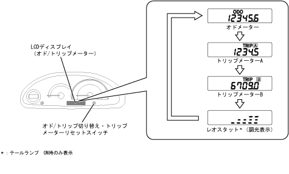

| Odo / Trip meter |
| ● |
The od/trip meter is displayed by switching by switching in the same position in the lower center of the combination meter.The mileage is digitally displayed in Arabic numerals in 6 -segment configuration by LCD.The display range is up to 999999km in 1km increments, and the trip meter is 0.1km increments and up to 9999.9km.The trip meter has two display functions, A and B, and has been displayed as three channels, including the odometer.
|
| ● |
Switching of each mode is performed by turning on the odometer → trip meter A → Trip meter B → Leostat display (only when tail lamp ON) (only for tail lamps ON) on the Odo/Trip Switch/Trip Meter Set Switch, which is located on the right side of the combination meter.Display in order.
|
| ● |
Trip -meter A or B is displayed during the indicator of Odo/Trip switching/Trip meter reset switch by pressing about 0.8 seconds or more to return the travel distance display of the current trip meter to 0.0 km to 0.0 km, and trip switch/trip meter reset switchStart measurement again when you turn it off.
|
|  |
 Odo/Trip meter operation Odo/Trip meter operation
|